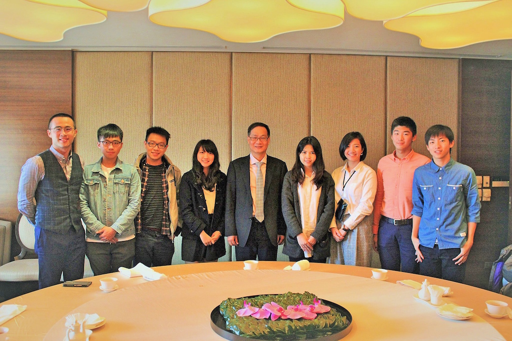

實習生都在做些什麼
提攜人計畫及直屬計畫
由台灣玉山科技協會之會員擔任小玉山實習生之業界導師，實習生可透過與成就傑出的導師近身學習之機會，養成廣大宏遠的視野與切身了解各產業概況，獲取最新一手的產業資訊與培養未來就業能力。
四大會計事務所、工研院、投資銀行、創投公司、法律事務所、資策會、顧問公司等來自各大領域的領導者都有機會成為你的mentor！

海外交流與參訪
與當地名校學術交流，至趨勢新創企業參訪，能踏出台灣增廣國際視野！玉山科技協會在全球共有14個分會，這些據點都有可能成為當年度的海外參訪地點 ！
跨視際青年論壇FVY
於每年上學期舉辦論壇，是第一個實習生親手籌辦的大活動！由主題製定、邀請講師至當天實際執行全權交給當屆實習生來進行。去年第一屆以產業趨勢及跨領域為主題，創造與CTY不同的主題，藉由座談會及分桌形式來拉近產學間的鴻溝。
玉山青年菁英論壇CTY
邁入第11年的CTY，是以創新創業為主軸的營隊，由當屆實習生負責籌辦，從主題制定、活動發想、宣傳招生、金錢管理到活動實際執行。最完整的大型專案實作經驗 讓你領導力、執行力，趨勢洞察力UPUP
對內課程培訓計畫
「溝通實務」、「台陸的關係與近期發展」、「心智圖」、「創業實務」、「高橋流簡報技巧」、「禮儀課」 等內容豐富的課程，由小玉山的幹事群邀請來自不同領域的專家為實習生上課，使實習生在團隊合作、舉辦活動時能夠更加流暢 ！
協助協會日常行政事務
小玉山的實習生每週需至協會排班，此為實習生的基本義務，並在排班時也可以更加了解協會內部處理事務嚴謹且高效率的的方式及制度
參與協會大型論壇活動
產業界最新的趨勢論壇，舉凡Fintech、全球併購到數位智能每個月不同的主題論壇，讓你在協辦的同時也能夠對於產業趨勢有著更深入的了解！
實習生能學到什麼

專案執行
獨立思考、規畫、並親自參與執行大型專案

團隊合作
來自各校菁英、截長補短、互相砥礪
主動積極
玉山是一座寶山,收穫取決於你的態度

態度
提前體驗職場,培養自發、負責個性
如何成為實習生
Step.1 參加CTY11玉山青年菁英論壇
Step.2 參加完CTY11後，繳交你的簡歷及申請表
Step.3 前來參加面試，一起聊聊你自己
Step.4 實習生甄選結果公佈